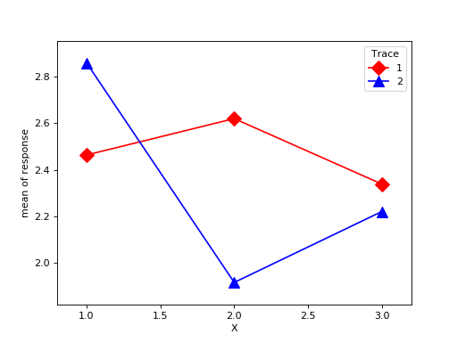

statsmodels.graphics.factorplots.interaction_plot¶
-
statsmodels.graphics.factorplots.interaction_plot(x, trace, response, func=<function mean>, ax=None, plottype='b', xlabel=None, ylabel=None, colors=None, markers=None, linestyles=None, legendloc='best', legendtitle=None, **kwargs)[source]¶ Interaction plot for factor level statistics.
Note. If categorial factors are supplied levels will be internally recoded to integers. This ensures matplotlib compatiblity.
uses pandas.DataFrame to calculate an aggregate statistic for each level of the factor or group given by trace.
- Parameters
- xarray-like
The x factor levels constitute the x-axis. If a pandas.Series is given its name will be used in xlabel if xlabel is None.
- tracearray-like
The trace factor levels will be drawn as lines in the plot. If trace is a pandas.Series its name will be used as the legendtitle if legendtitle is None.
- responsearray-like
The reponse or dependent variable. If a pandas.Series is given its name will be used in ylabel if ylabel is None.
- funcfunction
Anything accepted by pandas.DataFrame.aggregate. This is applied to the response variable grouped by the trace levels.
- plottypestr {‘line’, ‘scatter’, ‘both’}, optional
The type of plot to return. Can be ‘l’, ‘s’, or ‘b’
- axaxes, optional
Matplotlib axes instance
- xlabelstr, optional
Label to use for x. Default is ‘X’. If x is a pandas.Series it will use the series names.
- ylabelstr, optional
Label to use for response. Default is ‘func of response’. If response is a pandas.Series it will use the series names.
- colorslist, optional
If given, must have length == number of levels in trace.
- linestyleslist, optional
If given, must have length == number of levels in trace.
- markerslist, optional
If given, must have length == number of lovels in trace
- kwargs
These will be passed to the plot command used either plot or scatter. If you want to control the overall plotting options, use kwargs.
- Returns
- figFigure
The figure given by ax.figure or a new instance.
Examples
>>> import numpy as np >>> np.random.seed(12345) >>> weight = np.random.randint(1,4,size=60) >>> duration = np.random.randint(1,3,size=60) >>> days = np.log(np.random.randint(1,30, size=60)) >>> fig = interaction_plot(weight, duration, days, ... colors=['red','blue'], markers=['D','^'], ms=10) >>> import matplotlib.pyplot as plt >>> plt.show()
(Source code, png, hires.png, pdf)

{kind=link}
{kind=link}